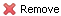
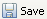
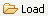

In this section, we will introduce the advanced functions of the Design tab.
You can move a scan up or down. To move a scan up, click on the
drop down menu button  , select . The scan will get switched with the scan above
it. To move a scan down, select in the drop down menu. The scan will get switched
with the block blow it.
, select . The scan will get switched with the scan above
it. To move a scan down, select in the drop down menu. The scan will get switched
with the block blow it.
To remove a scan, click on the drop down menu button
, select . The scan will be removed.
You can save the group of scans designed in the Design tab to a file in the Gumtree Project Folder and load it.
To save the group of scans, click on the  button. A Save As wizard window will pop up, as shown in Figure 2.15, “'Save As' Wizard”. You need to choose a project folder to store your file and provide a file name. Click OK button to confirm. By default, the extension name of the file is *.wml. After the file is saved, you can find it in the Project Explorer.
To load the saved group of scans, click on the  button. A File Selection window will pop up, as shown in Figure 2.16, “File Selection Window”. You can choose a file with an extension name of *.wml. The File Selection window allows you to locate any file in your file system.
Another way to load a saved scans is by drag and drop. In the Project Explorer block, locate the file you want to load. Simply drag and drop it into the Design tab. The file will be loaded. If the target file is not a scan file, an error message box will pop up.
The Design tab helps you to estimate how much time your group of scans is going to take. The text box that shows the estimation is located at the bottom left corner of the Design tab, as shown in Figure 2.17, “Run Time Estimation”.
If the scan modes of your tasks are time, the estimation will provide a value in time units. For example, 101 minutes or 15 hours.
If the scan modes of your tasks are count, the estimation will provide a value in counts. For example, 20,000 counts. To achieve the same counts, it will take different amount of time in different experiments.
If the scan mode of your tasks are a combination of time and count, the estimation will be time plus counts. For example, 3 hours and 10,000 counts.